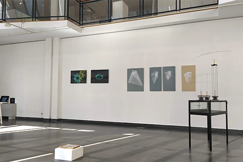
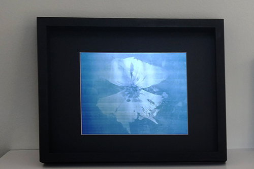
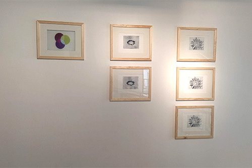
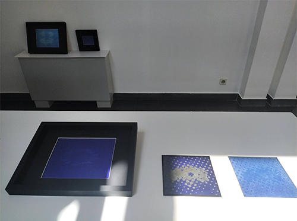
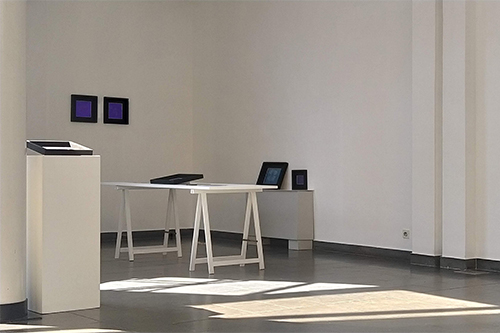

Vue de l'exposition avec au premier plan Senecio sp et Pissenlit, deux tirages lenticulaires de 50 x 72 cm, au second plan, plusieurs photogravures sur papier de soie et carbone, un gauffrage et plusieurs feuilles polymère UV sur aluminium, Espace Jean de Joigny, 2020.
AEROPORT A INSECTES
Pour lʼexposition nous avons fait le choix de renouer avec une tradition de lʼoutil élaboré afin de percevoir autrement notre environnement (sculpture, images de synthèses, impression lenticulaire, photogravure...). Sortir de lʼanthropocentrisme nous permet de mettre à distance lʼéchelle de perception humaine et dʼapprocher une autre perception de la réalité, une autre subjectivité pour devenir un facteur dʼanimalisation de lʼexpérience de vision.
Depuis 140 à 110 millions dʼannées, les plantes à fleurs ainsi que les ancêtres des insectes qui sont apparus simultanément, évoluent ensemble jusquʼà nos jours.
De cette coévolution où chacun à sélectionner en lʼautre les individus adaptés et sensibles à certains caractères, le LAAB a souhaité dans cette exposition en retravailler les couleurs, motifs, mouvements, formes et/ou odeurs...

Sur la droite Lʼart topiaire de la pyrale du buis, Peintures sur fibre composite, dimensions variables et fréquence de battement, Nicolas Bralet, LAAB 2018.
La pyrale dévaste les topiaires des jardins à la Française en grignotant la définition même de ce type de jardin : la recherche de la perfection formelle, d'une majesté théâtrale et d'un goût du spectacle.
Dans « LʼArt topiaire de la Pyrale du Buis », est utilisé la disposition naturelle de ces papillons attirés par la lumière et posées sur un mur selon un ordre qui nous échappe. Les pyrales semblent ainsi être de petits avions garés sur un aérodrome. Cette ordonnancement des insectes, détermine les formes géométriques des peintures. Les papillons sont reliés entre eux par groupe de trois. Chaque insecte devient le sommet de triangles. Dans un jeu de superpositions et de transparences, on peut y percevoir des faisceaux qui se croisent, des pierres précieuses taillées.
Ces formes géométriques créent « lʼArt topiaire des pyrales », un pied de nez aux jardins à la Française où la nature se doit dʼêtre ordonnée, taillée, géométrisée, maîtrisée.

Sarcaucolon vanderietiae, fréquences UV insolées sur feuille polymère UV contre aluminium, 20 X 28 cm, Sabrina Issa, Espace Jean de Joigny, 2020.
Le LAAB a réalisé une série de photographies grâce à un appareil spécifiquement élaboré pour lʼexposition et adapté à enregistrer le champ des UV. « Cet appareil à vision » nous permet de révéler les changements de couleurs, les lignes et les motifs visibles sur les fleurs à destination des insectes.
Avec le choix du bleu ou du jaune, couleurs bien perçues par les abeilles, certaines fleurs n'hésitent pas à développer une signalétique au centre de la corolle, formée de traits ou de tâches sombres, nommée "piège à nectar", qui a la particularité de n'être visible que dans l'ultraviolet parfaitement perceptible par les abeilles, mais invisible pour nous. C'est précisément ce dernier point de la couleur et de sa perception qui a été insolé sur des feuille polymère sensibles aux UV.

Trichromatisme, photogravure sur papier à l'encre marine et impression sur rhodoïd, de photographies réalisées grâce un appareil spécifiquement élaboré a enregistrer les fréquences UV. Sabrina Issa, LAAB 2020.
Sur la gauche l'impression sur calque, nous invite à contempler la surimpression de trois couleurs. Ce sont les couleurs avec lesquelles les abeilles composent les couleurs visible. Aussi cette pièce nous offre la palette colorée et perceptive du pollinisateur.
Cʼest donc avec une teinte de bleu, de vert et dʼultraviolet que le monde sʼoffre aux insectes. Aussi au centre des cercles et où pour nous, se situe le blanc résultant de la synthèse additive, les insectes eux, perçoivent un bleu ciel.

Gauffrage de photogravures sur papier de soie et papier carbone, Onagre, Stapelia revoluta var. glaucesens et Impatiens bicaudata, fréquences UV insolées sur feuille polymère UV contre aluminium, 20 X 20 cm et 30 x 30 cm, Sabrina Issa, Espace Jean de Joigny, 2020.

Vue de l'exposition, Aéroport à insectes, Espace Jean de Joigny, 2020.